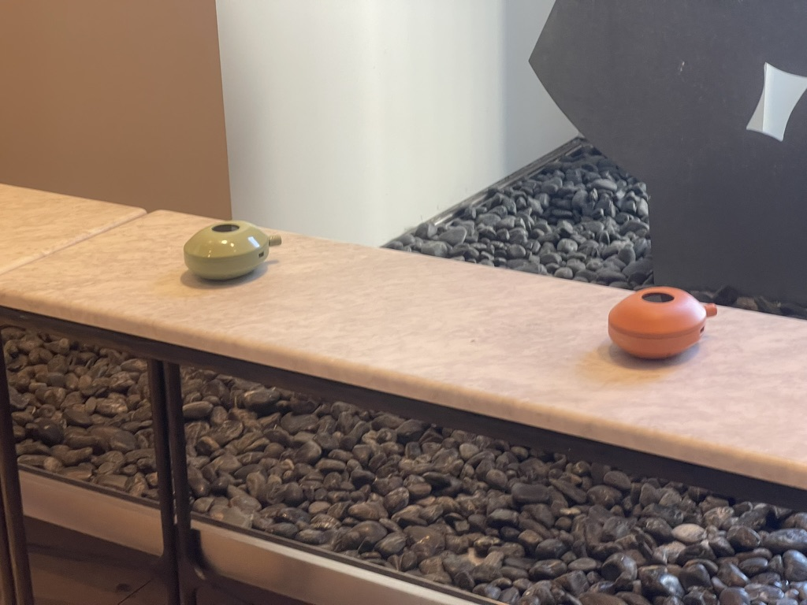
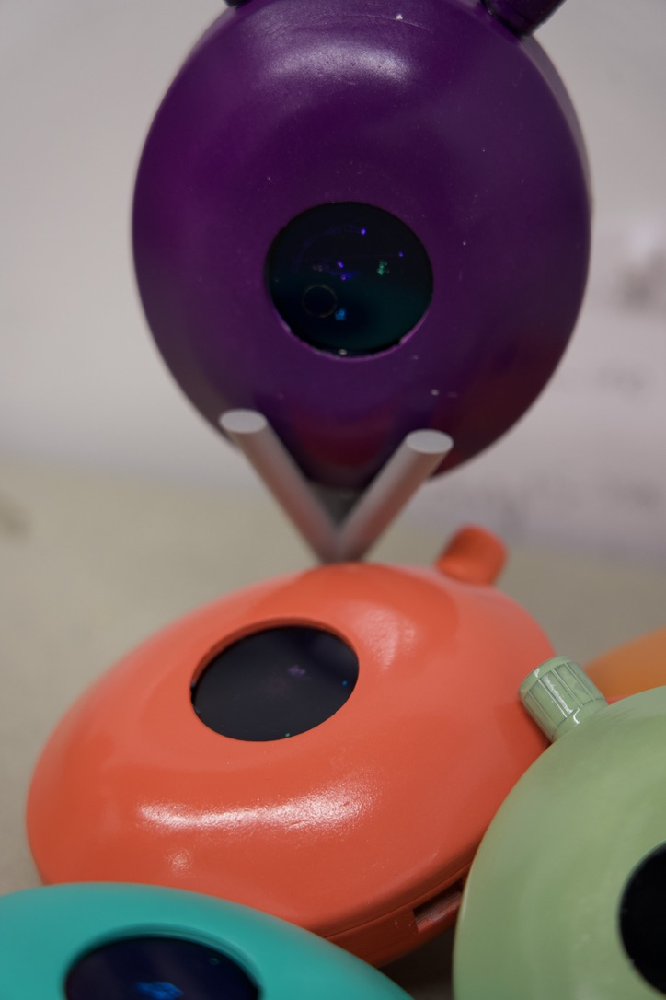
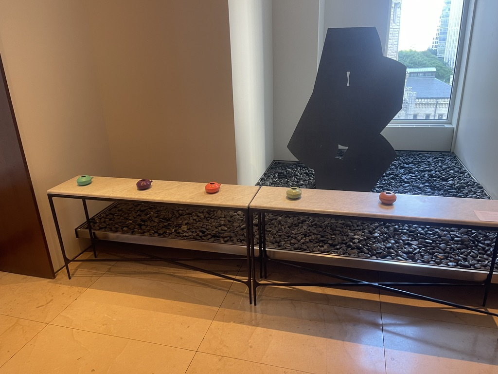
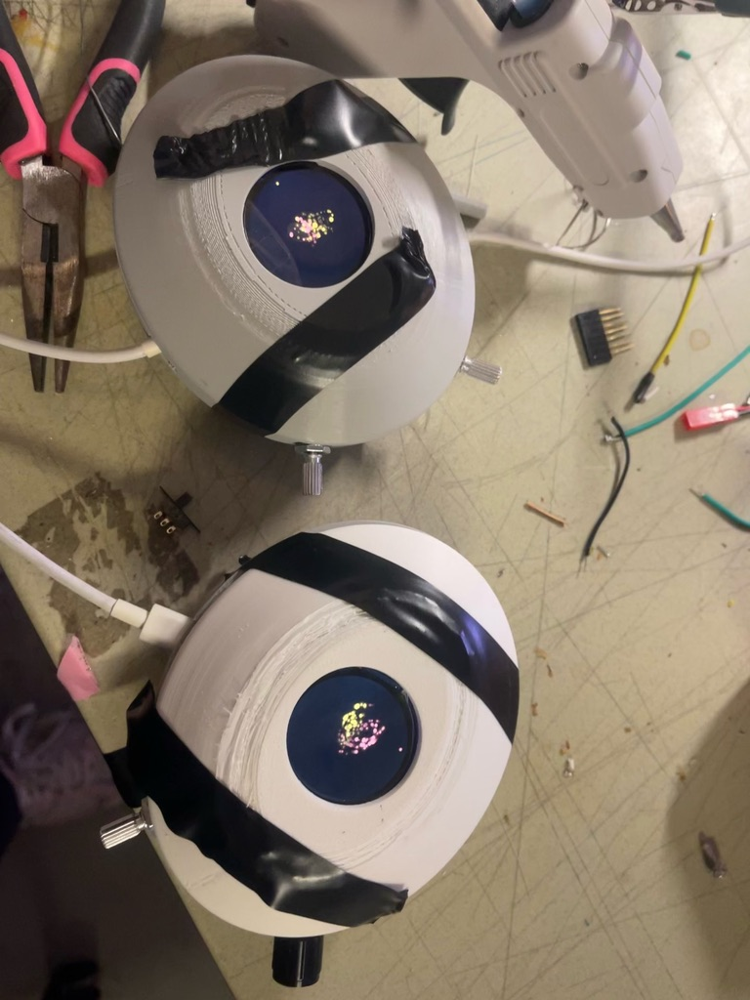
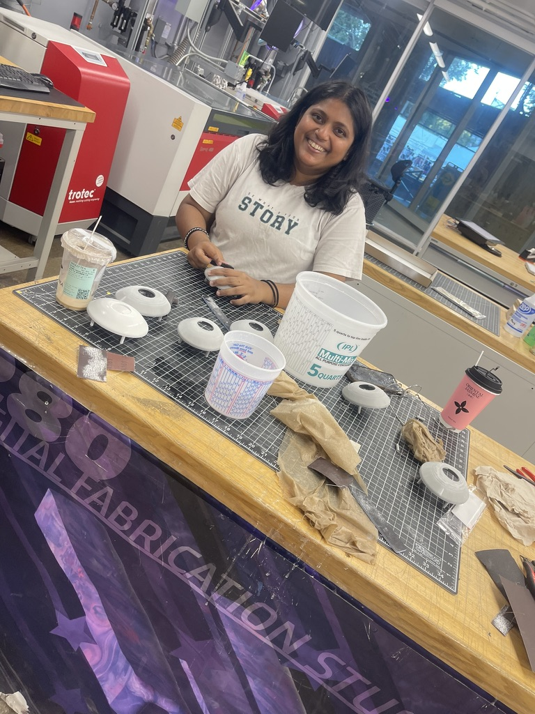
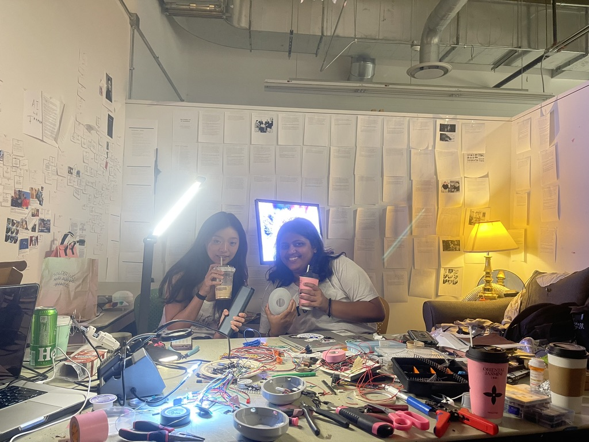

Grain Management Commission
2026 · Commission, Interactive Objects
Grain Management Commission is a commission, interactive objects by Nickii Schamborski, 2026.






About the work
A series of roughly twenty ESP32-S3 devices with OLED displays, built for an investor event held by Grain Management on 14 July 2026 at the Park Hyatt Chicago on the theme of AI and human collaboration. Each device carries a Tamagotchi-style creature that guests tend to over the course of the evening.
Zur Arbeit
Eine Serie von etwa zwanzig ESP32-S3 Geräten mit OLED-Display, gebaut für ein Investorenevent von Grain Management am 14. Juli 2026 im Park Hyatt Chicago zum Thema AI and Human Collaboration. Jedes Gerät trägt ein Tamagotchi-artiges Wesen, um das sich die Gäste im Lauf des Abends kümmern.
Details
- Year
- 2026
- Type
- Commission, Interactive Objects
- Specs
- Approx. 20 units, ESP32-S3 with OLED display, Tamagotchi-style interaction
- Institution / place
- Grain Management, Park Hyatt Chicago